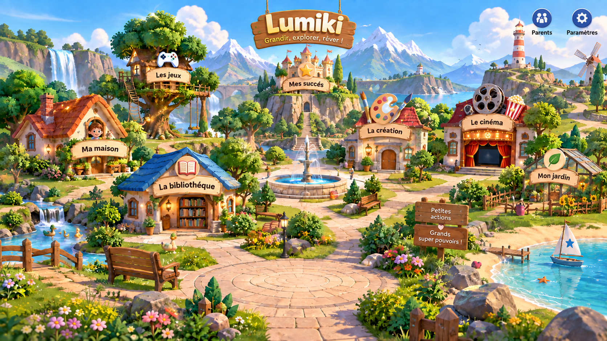
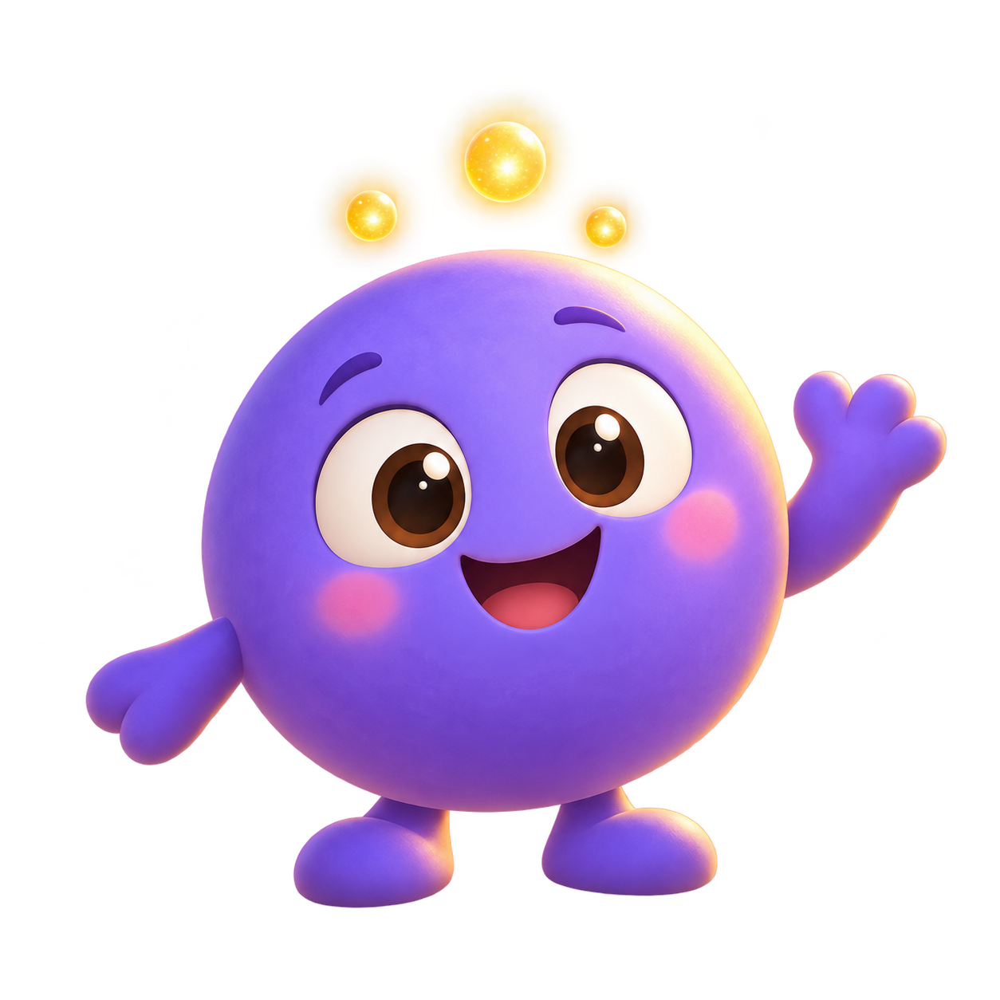

L'appli que j'aurais voulu trouver pour mon enfant : un petit monde à explorer, sans pub et sans piège.
Un village à parcourir, 31 jeux, des histoires, du dessin, un jardin et un petit ami à chouchouter. Pas de compte à créer, pas besoin d'internet, pour les enfants de 2 à 8 ans, sur tablette comme sur téléphone.
La cagnotte Ulule n'est pas encore ouverte. Je mettrai cette page à jour dès qu'elle le sera.

Mon enfant grandit avec des écrans autour de lui, comme tous les autres. Je ne veux pas les lui interdire, mais je veux que le temps passé dessus soit du bon temps, et que ce soit moi, le parent, qui décide, pas l'application.
Lumiki n'a besoin d'aucune connexion et n'envoie rien nulle part. Elle marche dans la voiture, chez mamie ou dans un train sans réseau.
Pas de publicité, pas d'achat caché, pas de bouton qui pousse à rejouer encore et encore. Quand le temps prévu est écoulé, l'appli s'arrête et le petit ami de votre enfant va dormir.
Un code parent (ou votre empreinte), des horaires, un temps d'écran par jour, le choix de ce qui est accessible, et de quoi voir ce que votre enfant a fait de son temps.
Des gestes simples, des parties courtes, et des jeux qui s'ajustent à l'âge : un tout-petit et un enfant de 7 ans ne jouent pas au même niveau.
Lumiki est encore en alpha et il reste des bugs, mais ce n'est pas une maquette : tout ce qui suit fonctionne dans l'application aujourd'hui.
L'enfant se promène librement : les jeux, sa maison, son jardin, la bibliothèque, le cinéma, l'atelier de dessin. Le village change avec les saisons et passe à la nuit le soir.
Memory, quiz, puzzle, lettres, calcul, labyrinthe, rimes, lecture de l'heure, piano… Ils s'adaptent à l'âge de votre enfant, et je m'efforce qu'ils restent ludiques plutôt que scolaires.
Dessin libre ou 12 modèles à colorier, avec des couleurs, une gomme et plusieurs tailles de pinceau.
Une bibliothèque rangée par onglets et par dossiers. Vous pouvez y ajouter les vôtres : une histoire racontée avec votre voix, ou des fichiers que vous avez déjà chez vous.
On le nourrit, on le lave en le frottant, on joue à la balle avec lui, on le couche. Il grandit, a des envies, et on peut lui acheter des habits avec les étoiles gagnées.
Il faut aussi chasser les escargots et attraper les papillons. Les légumes récoltés servent de repas au petit ami.
Trois mondes, chacun avec son village, ses décors, ses jeux et ses propres étoiles. D'autres mondes sont en préparation.
Vous ajoutez les liens (YouTube, Vimeo…) ou des vidéos enregistrées sur l'appareil. Rien d'autre n'apparaît : pas de suggestions, pas de recherche libre.
Code parent, plages d'écran, permissions par activité, statistiques du temps passé et de la progression, gestion des profils de chaque enfant.
J'ai besoin d'avis sincères de vrais parents : ce qui plaît à vos enfants, ce qui les bloque, ce qui vous agace, ce qui manque. Si vous avez un enfant de 2 à 8 ans et une tablette ou un téléphone, vous pouvez m'aider.
Il reste des bugs, c'est normal à ce stade : dites-les-moi tels quels. Vous écrirez directement à moi, pas à un service client.
Je continue à avancer de toute façon. La cagnotte me permettra surtout d'y consacrer plus de temps.
Après les pirates : dinosaures, espace, ferme, château enchanté, jungle, banquise, gourmandises, robots et cirque. Le code est prêt, il me reste les illustrations. Chaque monde apparaîtra dans l'appli dès que ses images seront là.
Je reprends peu à peu les images des jeux et des mondes pour que tout se ressemble, avec un style chaleureux et arrondi.
Plus de soins en mini-jeux, plus d'habits, plus d'occasions de s'occuper du jardin et de la maison.
Retrouver la progression de son enfant d'un appareil à l'autre, pour les familles qui le souhaitent. Sans jamais remettre en cause le fonctionnement hors-ligne.
L'appli s'adapte aux deux formats, le village suit les saisons et la nuit, la bibliothèque accepte vos propres histoires et le cinéma vos propres vidéos.

Je m'appelle Loïc, je suis développeur et papa. Lumiki est née d'un besoin tout simple : je voulais, pour mon enfant, une application sans publicité, qui ne cherche pas à le garder devant l'écran le plus longtemps possible. Comme je n'en trouvais pas, j'ai décidé de la faire.
Je la construis seul, avec le soin qu'on met dans un livre ou un jouet en bois : pas de compte à créer, pas de données qui partent ailleurs, pas de ruse pour prolonger le temps d'écran. C'est un travail de longue haleine, et c'est pour cela que la cagnotte compte pour moi.
Lumiki est en alpha : elle marche et je l'améliore régulièrement, mais il reste des bugs. Seules deux personnes l'ont testée pour l'instant, c'est pour cela que je cherche d'autres parents.
Écrivez-moi à loic.fremond31@gmail.com en me disant l'âge de votre enfant et l'appareil que vous utilisez. Je vous expliquerai comment installer l'application.
Oui. Tout est installé sur l'appareil : on peut jouer, écouter une histoire ou dessiner sans aucune connexion.
Sur tablettes et téléphones. Je la teste surtout sur Android, et aussi sur PC. D'autres plateformes viendront peut-être plus tard.
De 2 à 8 ans. Les jeux s'ajustent à l'âge de l'enfant et à son niveau, et vous pouvez changer cette tranche d'âge vous-même dans l'espace parent.
Elle n'est pas encore lancée. Je mettrai le lien sur cette page dès qu'elle ouvrira.
Essayez-la dès maintenant avec votre enfant, ou soutenez-moi quand la cagnotte ouvrira.